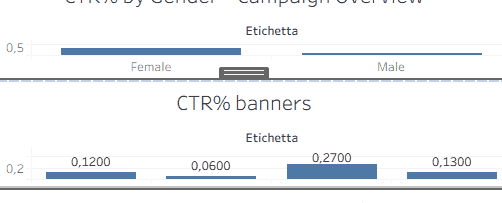

This project is a performance analysis exercise within the AdOps field. The advertising campaign data was analyzed to optimize effectiveness based on several dimensions: time, location, gender, age group, and banner format.
The dashboard presents key campaign metrics such as CTR, impressions, clicks, and eCPC, and enables an interactive assessment of the variables that drive performance. The goal is to support data-driven decisions and continuous media optimization.
Live preview of the interactive dashboard:
